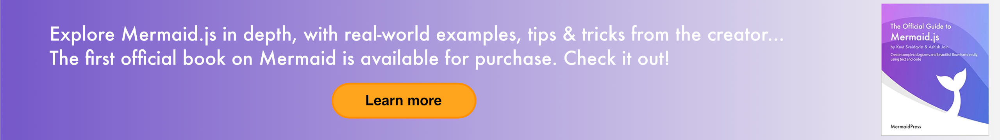

Mermaid
Generate diagrams from markdown-like text.
📖 Documentation | 🚀 Getting Started | 🌐 CDN | 🙌 Join Us
Try Live Editor previews of future releases: Develop | Next
[](https://www.npmjs.com/package/mermaid) [](https://github.com/mermaid-js/mermaid/actions/workflows/build.yml) [](https://bundlephobia.com/package/mermaid) [](https://app.codecov.io/github/mermaid-js/mermaid/tree/develop) [](https://www.jsdelivr.com/package/npm/mermaid) [](https://www.npmjs.com/package/mermaid) [](https://discord.gg/sKeNQX4Wtj) [](https://twitter.com/mermaidjs_) [](https://argos-ci.com?utm_source=mermaid&utm_campaign=oss) [](https://securityscorecards.dev/viewer/?uri=github.com/mermaid-js/mermaid)
 :trophy: **Mermaid was nominated and won the [JS Open Source Awards (2019)](https://osawards.com/javascript/2019) in the category "The most exciting use of technology"!!!**
**Thanks to all involved, people committing pull requests, people answering questions! 🙏**
:trophy: **Mermaid was nominated and won the [JS Open Source Awards (2019)](https://osawards.com/javascript/2019) in the category "The most exciting use of technology"!!!**
**Thanks to all involved, people committing pull requests, people answering questions! 🙏**

## Table of contentExpand contents
- [About](#about) - [Examples](#examples) - [Release](#release) - [Related projects](#related-projects) - [Contributors](#contributors---) - [Security and safe diagrams](#security-and-safe-diagrams) - [Reporting vulnerabilities](#reporting-vulnerabilities) - [Appreciation](#appreciation)Mermaid addresses this problem by enabling users to create easily modifiable diagrams. It can also be made part of production scripts (and other pieces of code).
Mermaid allows even non-programmers to easily create detailed diagrams through the [Mermaid Live Editor](https://mermaid.live/).
For video tutorials, visit our [Tutorials](https://mermaid.js.org/ecosystem/tutorials.html) page. Use Mermaid with your favorite applications, check out the list of [Integrations and Usages of Mermaid](https://mermaid.js.org/ecosystem/integrations-community.html). You can also use Mermaid within [GitHub](https://github.blog/2022-02-14-include-diagrams-markdown-files-mermaid/) as well many of your other favorite applications—check out the list of [Integrations and Usages of Mermaid](https://mermaid.js.org/ecosystem/integrations-community.html). For a more detailed introduction to Mermaid and some of its more basic uses, look to the [Beginner's Guide](https://mermaid.js.org/intro/getting-started.html), [Usage](https://mermaid.js.org/config/usage.html) and [Tutorials](https://mermaid.js.org/ecosystem/tutorials.html). Our PR Visual Regression Testing is powered by [Argos](https://argos-ci.com/?utm_source=mermaid&utm_campaign=oss) with their generous Open Source plan. It makes the process of reviewing PRs with visual changes a breeze. [](https://argos-ci.com?utm_source=mermaid&utm_campaign=oss) In our release process we rely heavily on visual regression tests using [applitools](https://applitools.com/). Applitools is a great service which has been easy to use and integrate with our tests. ## Examples **The following are some examples of the diagrams, charts and graphs that can be made using Mermaid. Click here to jump into the [text syntax](https://mermaid.js.org/intro/syntax-reference.html).** ### Flowchart [docs - live editor] ``` flowchart LR A[Hard] -->|Text| B(Round) B --> C{Decision} C -->|One| D[Result 1] C -->|Two| E[Result 2] ``` ```mermaid flowchart LR A[Hard] -->|Text| B(Round) B --> C{Decision} C -->|One| D[Result 1] C -->|Two| E[Result 2] ``` ### Sequence diagram [docs - live editor] ``` sequenceDiagram Alice->>John: Hello John, how are you? loop HealthCheck John->>John: Fight against hypochondria end Note right of John: Rational thoughts! John-->>Alice: Great! John->>Bob: How about you? Bob-->>John: Jolly good! ``` ```mermaid sequenceDiagram Alice->>John: Hello John, how are you? loop HealthCheck John->>John: Fight against hypochondria end Note right of John: Rational thoughts! John-->>Alice: Great! John->>Bob: How about you? Bob-->>John: Jolly good! ``` ### Gantt chart [docs - live editor] ``` gantt section Section Completed :done, des1, 2014-01-06,2014-01-08 Active :active, des2, 2014-01-07, 3d Parallel 1 : des3, after des1, 1d Parallel 2 : des4, after des1, 1d Parallel 3 : des5, after des3, 1d Parallel 4 : des6, after des4, 1d ``` ```mermaid gantt section Section Completed :done, des1, 2014-01-06,2014-01-08 Active :active, des2, 2014-01-07, 3d Parallel 1 : des3, after des1, 1d Parallel 2 : des4, after des1, 1d Parallel 3 : des5, after des3, 1d Parallel 4 : des6, after des4, 1d ``` ### Class diagram [docs - live editor] ``` classDiagram Class01 <|-- AveryLongClass : Cool <
with personal bank accounts.") Enterprise_Boundary(b1, "BankBoundary") { SystemDb_Ext(SystemE, "Mainframe Banking System", "Stores all of the core banking information about customers, accounts, transactions, etc.") System_Boundary(b2, "BankBoundary2") { System(SystemA, "Banking System A") System(SystemB, "Banking System B", "A system of the bank, with personal bank accounts.") } System_Ext(SystemC, "E-mail system", "The internal Microsoft Exchange e-mail system.") SystemDb(SystemD, "Banking System D Database", "A system of the bank, with personal bank accounts.") Boundary(b3, "BankBoundary3", "boundary") { SystemQueue(SystemF, "Banking System F Queue", "A system of the bank, with personal bank accounts.") SystemQueue_Ext(SystemG, "Banking System G Queue", "A system of the bank, with personal bank accounts.") } } BiRel(customerA, SystemAA, "Uses") BiRel(SystemAA, SystemE, "Uses") Rel(SystemAA, SystemC, "Sends e-mails", "SMTP") Rel(SystemC, customerA, "Sends e-mails to") ``` ```mermaid C4Context title System Context diagram for Internet Banking System Person(customerA, "Banking Customer A", "A customer of the bank, with personal bank accounts.") Person(customerB, "Banking Customer B") Person_Ext(customerC, "Banking Customer C") System(SystemAA, "Internet Banking System", "Allows customers to view information about their bank accounts, and make payments.") Person(customerD, "Banking Customer D", "A customer of the bank,
with personal bank accounts.") Enterprise_Boundary(b1, "BankBoundary") { SystemDb_Ext(SystemE, "Mainframe Banking System", "Stores all of the core banking information about customers, accounts, transactions, etc.") System_Boundary(b2, "BankBoundary2") { System(SystemA, "Banking System A") System(SystemB, "Banking System B", "A system of the bank, with personal bank accounts.") } System_Ext(SystemC, "E-mail system", "The internal Microsoft Exchange e-mail system.") SystemDb(SystemD, "Banking System D Database", "A system of the bank, with personal bank accounts.") Boundary(b3, "BankBoundary3", "boundary") { SystemQueue(SystemF, "Banking System F Queue", "A system of the bank, with personal bank accounts.") SystemQueue_Ext(SystemG, "Banking System G Queue", "A system of the bank, with personal bank accounts.") } } BiRel(customerA, SystemAA, "Uses") BiRel(SystemAA, SystemE, "Uses") Rel(SystemAA, SystemC, "Sends e-mails", "SMTP") Rel(SystemC, customerA, "Sends e-mails to") ``` ## Release For those who have the permission to do so: Update version number in `package.json`. ```sh npm publish ``` The above command generates files into the `dist` folder and publishes them to <https://www.npmjs.com>. ## Related projects - [Command Line Interface](https://github.com/mermaid-js/mermaid-cli) - [Live Editor](https://github.com/mermaid-js/mermaid-live-editor) - [HTTP Server](https://github.com/TomWright/mermaid-server) ## Contributors [](https://github.com/mermaid-js/mermaid/issues?q=is%3Aissue+is%3Aopen+label%3A%22Good+first+issue%21%22) [](https://github.com/mermaid-js/mermaid/graphs/contributors) [](https://github.com/mermaid-js/mermaid/graphs/contributors) Mermaid is a growing community and is always accepting new contributors. There's a lot of different ways to help out and we're always looking for extra hands! Look at [this issue](https://github.com/mermaid-js/mermaid/issues/866) if you want to know where to start helping out. Detailed information about how to contribute can be found in the [contribution guide](https://mermaid.js.org/community/contributing.html) ## Security and safe diagrams For public sites, it can be precarious to retrieve text from users on the internet, storing that content for presentation in a browser at a later stage. The reason is that the user content can contain embedded malicious scripts that will run when the data is presented. For Mermaid this is a risk, specially as mermaid diagrams contain many characters that are used in html which makes the standard sanitation unusable as it also breaks the diagrams. We still make an effort to sanitize the incoming code and keep refining the process but it is hard to guarantee that there are no loop holes. As an extra level of security for sites with external users we are happy to introduce a new security level in which the diagram is rendered in a sandboxed iframe preventing javascript in the code from being executed. This is a great step forward for better security. _Unfortunately you cannot have a cake and eat it at the same time which in this case means that some of the interactive functionality gets blocked along with the possible malicious code._ ## Reporting vulnerabilities To report a vulnerability, please e-mail <security@mermaid.live> with a description of the issue, the steps you took to create the issue, affected versions, and if known, mitigations for the issue. ## Appreciation A quick note from Knut Sveidqvist: > _Many thanks to the [d3](https://d3js.org/) and [dagre-d3](https://github.com/cpettitt/dagre-d3) projects for providing the graphical layout and drawing libraries!_ > > _Thanks also to the [js-sequence-diagram](https://bramp.github.io/js-sequence-diagrams) project for usage of the grammar for the sequence diagrams. Thanks to Jessica Peter for inspiration and starting point for gantt rendering._ > > _Thank you to [Tyler Long](https://github.com/tylerlong) who has been a collaborator since April 2017._ > > _Thank you to the ever-growing list of [contributors](https://github.com/mermaid-js/mermaid/graphs/contributors) that brought the project this far!_ --- _Mermaid was created by Knut Sveidqvist for easier documentation._